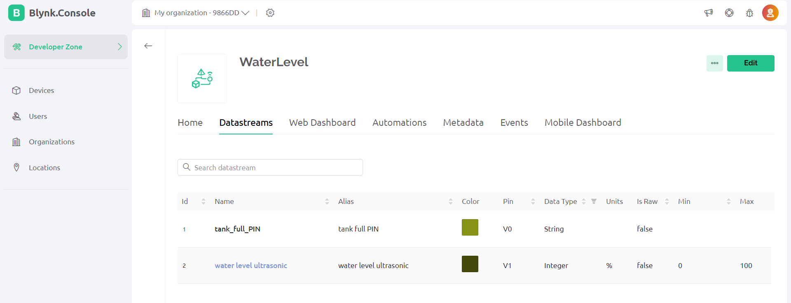
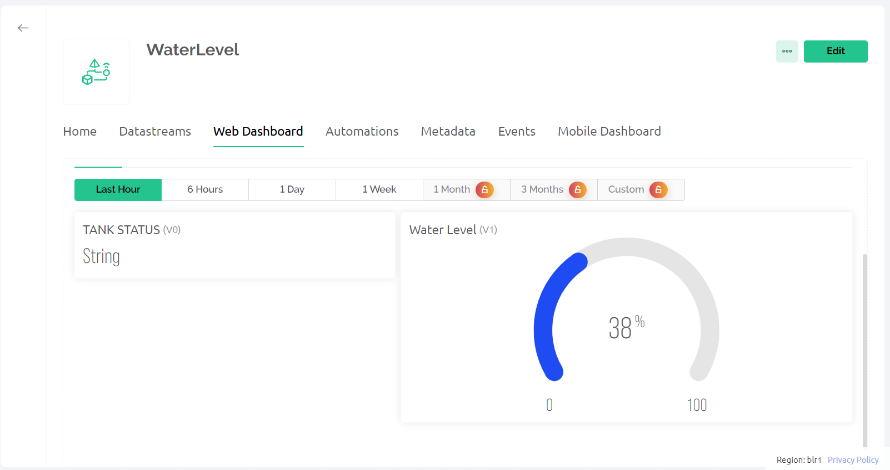

In this IoT project, a comprehensive guide is provided for the development of a water level indicator using an ultrasonic sensor, ESP32 microcontroller, and the Blynk IoT platform. The inclusion of a water sensor enhances the functionality of the system. The project details the step-by-step process for creating a straightforward water level monitoring system, integrating hardware components seamlessly with the Blynk platform for real-time monitoring
(Water proof ultrasonic sensor is preferable for this project)
While creating the template, I selected ESP32 as the hardware and the connection type as WiFi.
In the template, I have created first datastream(Pin: V0, Datatype: String) to show whether the tank is full or not . Second datastream (Pin: V1, Datatype: Integer, Min Value: 0, Max Value: 100) to show the water level in tank in percentage
After that, click and drag 1 Gauge widget, and 1 Label widget, and select the related Datastreams for each widget.
Then click on “Save” to save the template
For this IoT-based project, I have used the Arduino IDE to program ESP32
Created By:
Bhavya Mahadev Patgar(4NM21IS035)
Harshitha K Karkera(4NM21IS051)
Guided By: Dr.Jason Elroy Martis